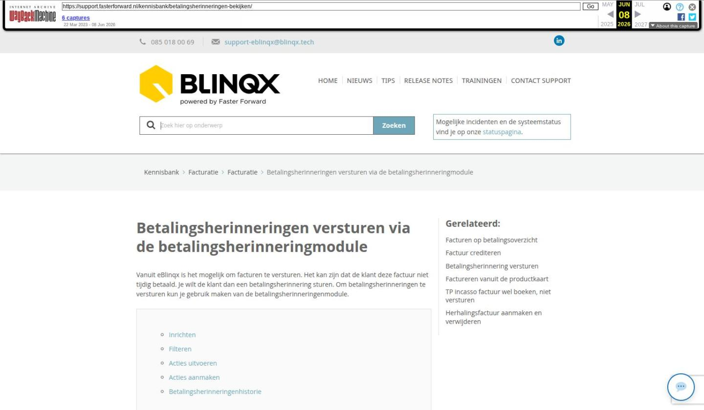

Betalingsherinneringen versturen via de betalingsherinneringmodule

Tekstinhoud
Betalingsherinneringen versturen via de betalingsherinneringmodule
Vanuit eBlinqx is het mogelijk om facturen te versturen. Het kan zijn dat de klant deze factuur niet tijdig betaald. Je wilt de klant dan een betalingsherinnering sturen. Om betalingsherinneringen te versturen kun je gebruik maken van de betalingsherinneringenmodule.
Inrichten
Filteren
Acties uitvoeren
Acties aanmaken
Betalingsherinneringenhistorie
Inrichten
Als je van de module gebruik wilt maken, stuur dan een e-mail naar support-eblinqx@blinqx.tech met de titel “Betalingsherinneringen module gebruiken”.
Let op!: betalingsherinneringen kunnen ook verstuurd worden vanuit de workflow. Het is niet wenselijk om zowel de workflow als de betalingsherinneringenmodule tegelijkertijd te gebruiken. Hierin zal een keus gemaakt moeten worden. Bespreek dit met een consultant van Blinqx.
Zodra de module is ingericht door Blinqx, vind je deze onder Financieel – Betalingsherinneringen.
Filteren
Filter binnen de module naar wens door de velden links in te vullen en vervolgens te klikken op ‘filter selectie’.
In het overzicht worden alle dossiers getoond die een factuur hebben ontvangen. In verschillende kolommen wordt er informatie getoond over de factuur, bijvoorbeeld openstaand bedrag, factuurstatus, betaalwijze en verzendwijze.
Acties uitvoeren
Selecteer de facturen waar je een actie op wilt uitvoeren door de checkbox voor in de regel aan te vinken of door de gehele selectie te selecteren door de bovenste checkbox aan te vinken.
Vervolgens ga je naar de knop ‘Kies uw actiegroep’ om de gewenste actie te selecteren.
Wanneer je een keuze gemaakt hebt, komt de knop ‘Uitvoeren’ zichtbaar. Als je hier op klikt wordt de geselecteerde actie uitgevoerd.
Acties aanmaken
In de module Betalingsherinneringen staat rechts bovenin een hamburgermenu. Als je hier op klikt, komen er twee opties zichtbaar:
Via Actiegroepenbeheer is het mogelijk om een nieuwe actie aan te maken. Klik hiervoor op ‘Actiegroep toevoegen’. De actiegroep geef je een naam en vervolgens klik je op opslaan:
Via het plusicoon achter acties voeg je een actie toe aan de actiegroep:
Vervolgens geef je de actie een naam en kies het actie type en klikt op opslaan. Dan geef je aan wat de factuurstatus moet zijn nadat deze actie is uitgevoerd. Je klikt weer op opslaan.
De aangemaakte actiegroepen en acties kan je aanpassen via het wijzigingsicoon en verwijderen door middel van het rode kruisje.
Betalingsherinneringenhistorie
Via het hamburger kan je ook de betalingsherinneringshistorie inzien. Hier kan je verschillende gegevens terughalen, namelijk welke actiegroep is uitgevoerd, door wie dit is gedaan en wanneer deze is aangemaakt en verwerkt. Indien het een betalingsherinnering per brief is, kan je hier ook de aangemaakte brieven terug vinden.
Laatste update: 15 oktober 2025
Was deze informatie nuttig?
Ja Nee